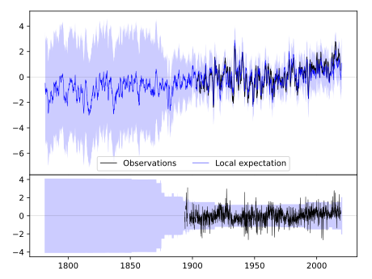
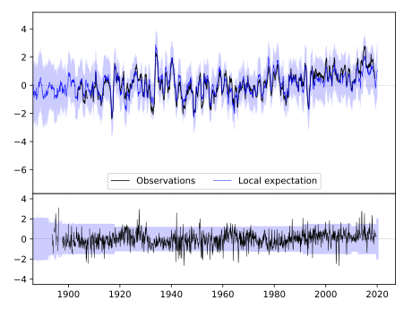
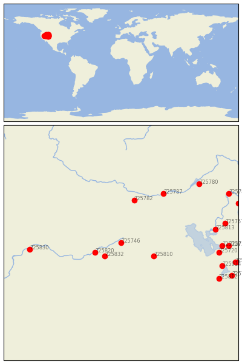

WELLS [USA]


| Neighbour | Name | Country | Distance | Lon/Lat | Years |
|---|
| 725746 | WELLS | USA | 0 | -115.0, 41.1 | 1893-2019 |
| 725832 | LAMOILLE | USA | 61 | -115.5, 40.7 | 1918-1970 |
| 725820 | ELKO FAA AP | USA | 75 | -115.8, 40.8 | 1930-2012 |
| 725810 | WENDOVER AP AWOS | USA | 95 | -114.0, 40.7 | 1892-2019 |
| 725782 | HOLLISTER | USA | 148 | -114.6, 42.4 | 1894-2019 |
| 725787 | RUPERT | USA | 198 | -113.7, 42.6 | 1906-1965 |
| 725830 | WINNEMUCCA AP | USA | 236 | -117.8, 40.9 | 1877-2020 |
| 725813 | CORINNE | USA | 246 | -112.1, 41.5 | 1893-2019 |
| 725720 | SALT LAKE CITY, UTAH | USA | 254 | -112.0, 40.8 | 1875-2020 |
| 725727 | FARMINGTON 3 NW | USA | 260 | -111.9, 41.0 | 1893-2019 |
| 725914 | UTAH LAKE LEHI | USA | 272 | -111.9, 40.4 | 1895-2019 |
| 725757 | LOGAN UTAH ST UNIV | USA | 275 | -111.8, 41.7 | 1891-2019 |
| 725725 | MORGAN POWER & LIGHT | USA | 276 | -111.7, 41.0 | 1893-2019 |
| 725812 | ELBERTA------------- | USA--------- | 281 | -112.0, 40.0 | 1914-1992 |
| 725780 | POCATELLO/MUNI | USA | 281 | -112.6, 42.9 | 1938-2020 |
| 725728 | SNAKE CREEK POWERHOU | USA | 302 | -111.5, 40.5 | 1893-2019 |
| 725723 | SPANISH FORK PWR HOU | USA | 307 | -111.6, 40.1 | 1893-2019 |
| 725724 | HEBER | USA | 310 | -111.4, 40.5 | 1893-2019 |
| 725781 | GRACE | USA | 320 | -111.7, 42.6 | 1893-2019 |
| 725761 | BERN | USA | 327 | -111.4, 42.3 | 1893-2019 |